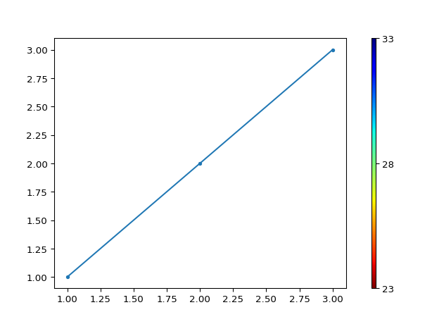

reda.utils package¶
Utility functions
Submodules¶
reda.utils.data module¶
-
reda.utils.data.download_data(identifier, outdir)[source]¶ Download data from a separate data repository for testing.
- Parameters
- identifier: string
The identifier used to find the data set
- outdir: string
unzip the data in this directory
-
reda.utils.data.inventory_filename= 'inventory.dat'¶
-
reda.utils.data.repository_url= 'https://raw.githubusercontent.com/geophysics-ubonn/reda_examples_mw/master/'¶
-
reda.utils.data.use_local_data_repository= None¶
reda.utils.decorators_and_managers module¶
Utility class for context managers and decorators
-
class
reda.utils.decorators_and_managers.LogDataChanges(container, filter_action='default', filter_query='')[source]¶ Bases:
objectContext manager that observes the DataFrame of a data container for changes in the number of rows.
Examples
>>> from reda.testing.containers import ERTContainer >>> from reda.containers.ERT import LogDataChanges >>> with LogDataChanges(ERTContainer): ... # now change the data ... ERTContainer.data.loc[0, "r"] = 22 ... ERTContainer.data.query("r < 10", inplace=True) >>> # ERTContainer.print_log() 2... - root - INFO - Data change from 22 to 21
reda.utils.eit_fzj_utils module¶
-
reda.utils.eit_fzj_utils.apply_correction_factors(df, correction_file)[source]¶ Apply correction factors for a pseudo-2D measurement setup. See Weigand and Kemna, 2017, Biogeosciences, for more information:
https://doi.org/10.5194/bg-14-921-2017
- Parameters
- df
pandas.DataFrame Data container
- correction_filestring
Path to correction file. The file must have 5 columns: a,b,m,n,correction_factor
- df
- Returns
- corr_dataNx5
numpy.ndarray Correction files as imported from the file. Columns: a,b,m,n,correction_factor
- corr_dataNx5
-
reda.utils.eit_fzj_utils.check_resistor_board_measurements(data_file, reference_data_file=None, create_plot=True, **kwargs)[source]¶ To check basic system function a test board was built with multiple resistors attached to for connectors each. Measurements can thus be validated against known electrical (ohmic) resistances.
Note that the normal-reciprocal difference is not yet analyzed!
The referenc_data_file should have the following structure: The file contains the four-point spreads to be imported from the measurement. This file is a text file with four columns (A, B, M, N), separated by spaces or tabs. Each line denotes one measurement and its expected resistance, the allowed variation, and its allow difference towards its reciprocal counterpart:
1 2 4 3 1000 1 20 4 3 2 1 1000 1 20
- Parameters
- data_filestring
path to mnu0 data file
- reference_data_file: string, optional
path to reference data file with structure as describe above. Default data is used if set to None
- create_plotbool, optional
if True, create a plot with measured and expected resistances
- **kwargsdict, optional
**kwargs will be redirected to the sEIT.import_eit_fzj call
- Returns
- figfigure object, optional
if create_plot is True, return a matplotlib figure
-
reda.utils.eit_fzj_utils.compute_correction_factors(data, true_conductivity, elem_file, elec_file)[source]¶ Compute correction factors for 2D rhizotron geometries, following Weigand and Kemna, 2017, Biogeosciences
https://doi.org/10.5194/bg-14-921-2017
- Parameters
- data
pandas.DataFrame measured data
- true_conductivityfloat
Conductivity in S/m
- elem_filestring
path to CRTomo FE mesh file (elem.dat)
- elec_filestring
path to CRTomo FE electrode file (elec.dat)
- data
- Returns
- correction_factorsNx5 :py:class.`numpy.ndarray`
measurement configurations and correction factors (a,b,m,n,correction_factor)
reda.utils.enter_directory module¶
-
class
reda.utils.enter_directory.CreateEnterDirectory(directory)[source]¶ Bases:
reda.utils.enter_directory.EnterDirectoryThis is a context manager that enters a given directory and returns to the initial current directory after finishing. If the target directory does not exist, create it.
reda.utils.filter_config_types module¶
Sort configurations into four-point spread types.
Sorting is done by subsequently applying filters to the configurations, with removal of selected configurations. Thus, each filter sees only configurations not ‘chosen’ by any previously applied filters.
dipole-dipole
Schlumberger
Wenner
misc
-
reda.utils.filter_config_types.filter(configs, settings)[source]¶ Main entry function to filtering configuration types
- Parameters
- configs: Nx4 array
array containing A-B-M-N configurations
- settings: dict
‘only_types’: [‘dd’, ‘other’], # filter only for those types
- Returns
- dict
results dict containing filter results (indices) for all registered filter functions. All remaining configs are stored under the keywords ‘remaining’
reda.utils.fix_sign_with_K module¶
Fix signs in resistance measurements using the K factors. The sign of negative resistance measurements can be switched if the geometrical factor is negative.
-
reda.utils.fix_sign_with_K.fix_sign_with_K(dataframe)[source]¶ Swap electrode denotations so that geometrical (K) factors become positive. Also, swap signs of all parameters affected by this process.
Affected parameters, at the moment, are:
K
r
Vmn
Zt
rho_a
rpha
- Parameters
- dataframepandas.DateFrame
dataframe holding the data
- Returns
- dataframepandas.DateFrame
the fixed dataframe
reda.utils.geom_fac_crtomo module¶
Compute geometric factors (also referred to as K) using CRMod/CRTomo
-
reda.utils.geom_fac_crtomo.CRbinaries= None¶
-
reda.utils.geom_fac_crtomo.CRcfg= <module 'crtomo.cfg' from '/home/travis/virtualenv/python3.6.3/lib/python3.6/site-packages/crtomo/cfg.py'>¶
-
reda.utils.geom_fac_crtomo.compute_K(dataframe, settings, keep_dir=False)[source]¶ - Parameters
- dataframe: pandas.DataFrame
dataframe that contains the data
- settings: dict
with required settings, see below
- keep_dir: path
if not None, copy modeling dir here
- settings = {
‘rho’: 100, # resistivity to use for homogeneous model, [Ohm m] ‘elem’ ‘elec’ ‘2D’ : True|False ‘sink_node’: ‘100’,
- }
-
reda.utils.geom_fac_crtomo.mpl= <module 'matplotlib' from '/home/travis/virtualenv/python3.6.3/lib/python3.6/site-packages/matplotlib/__init__.py'>¶
-
reda.utils.geom_fac_crtomo.plt= <module 'matplotlib.pyplot' from '/home/travis/virtualenv/python3.6.3/lib/python3.6/site-packages/matplotlib/pyplot.py'>¶
reda.utils.geometric_factors module¶
select and execute functions to compute geometric factors according to the rcParams variable.
-
reda.utils.geometric_factors.apply_K(df, k)[source]¶ Apply the geometric factors to the dataset and compute (apparent) resistivities/conductivities
-
reda.utils.geometric_factors.compute_K_analytical(dataframe, spacing)[source]¶ Given an electrode spacing, compute geometrical factors using the equation for the homogeneous half-space (Neumann-equation)
If a dataframe is given, use the column (a, b, m, n). Otherwise, expect an Nx4 arrray.
- Parameters
- dataframepandas.DataFrame or numpy.ndarray
Configurations, either as DataFrame
- spacingfloat or numpy.ndarray
distance between electrodes. If array, then these are the x-coordinates of the electrodes
-
reda.utils.geometric_factors.compute_K_numerical(dataframe, settings=None, keep_dir=None)[source]¶ Use a finite-element modeling code to infer geometric factors for meshes with topography or irregular electrode spacings.
- Parameters
- dataframepandas.DataFrame
the data frame that contains the data
- settingsdict
The settings required to compute the geometric factors. See examples down below for more information in the required content.
- keep_dirpath
if not None, copy modeling dir here
- Returns
- K
numpy.ndarray K factors (are also directly written to the dataframe)
- K
Examples
settings = { 'rho': 100, 'elem': 'elem.dat', 'elec': 'elec.dat', 'sink_node': '100', '2D': False, }
reda.utils.helper_functions module¶
Useful helper functions.
-
reda.utils.helper_functions.has_multiple_timesteps(data)[source]¶ Return True if data container has multiple timesteps.
-
reda.utils.helper_functions.opt_import(module, requiredFor='use the full functionality')[source]¶ Import and return module only if it exists. If module cannot be imported, a warning is printed followed by the requiredFor string. Otherwise, the imported module will be returned. This function should be used to import optional dependencies in order to avoid repeated try/except statements.
- Parameters
- modulestr
Name of the module to be imported.
- requiredForstr, optional
Info string for the purpose of the dependency.
Examples
>>> from reda.utils import opt_import >>> reda = opt_import("reda") >>> reda.__name__ 'reda' >>> opt_import("doesNotExist", requiredFor="do something special") No module named 'doesNotExist'. You need to install this optional dependency to do something special.
-
reda.utils.helper_functions.search(what)[source]¶ Utility function to search docstrings for string what.
reda.utils.mpl module¶
This file set ups matplotlib plot functions for the whole package.
Import all necessary Matplotlib modules and set default options To use this module, import * from it:
Examples¶
>>> import reda.utils.mpl
>>> plt, mpl = reda.utils.mpl.setup()
-
reda.utils.mpl.latex= None¶
-
reda.utils.mpl.mpl_get_cb_bound_below_plot(ax)[source]¶ Return the coordinates for a colorbar axes below the provided axes object. Take into account the changes of the axes due to aspect ratio settings.
Important: Use only AFTER fig.subplots_adjust(…)
-
reda.utils.mpl.mpl_get_cb_bound_next_to_plot(ax)[source]¶ Return the coordinates for a colorbar axes next to the provided axes object. Take into account the changes of the axes due to aspect ratio settings.
Parts of this code are taken from the transforms.py file from matplotlib
Important: Use only AFTER fig.subplots_adjust(…)
Examples
>>> import matplotlib as mpl >>> import matplotlib.pyplot as plt >>> from reda.utils.mpl import mpl_get_cb_bound_next_to_plot >>> fig, ax = plt.subplots() >>> fig.subplots_adjust(right=0.8) >>> plt_obj = ax.plot([1, 2, 3], [1, 2, 3], '.-') >>> cb_pos = mpl_get_cb_bound_next_to_plot(ax) >>> ax1 = fig.add_axes(cb_pos, frame_on=True) >>> cmap = mpl.cm.jet_r >>> norm = mpl.colors.Normalize(vmin=float(23), vmax=float(33)) >>> cb1 = mpl.colorbar.ColorbarBase( ... ax1, ... cmap=cmap, ... norm=norm, ... orientation='vertical' ... ) >>> cb1.locator = mpl.ticker.FixedLocator([23, 28, 33]) >>> cb1.update_ticks() >>> cb1.ax.artists.remove(cb1.outline)
(Source code, png, pdf)

{kind=link}
-
reda.utils.mpl.setup(use_latex=False, overwrite=False)[source]¶ Set up matplotlib imports and settings.
- Parameters
- use_latex: bool, optional
Determine if Latex output should be used. Latex will only be enable if a ‘latex’ binary is found in the system.
- overwrite: bool, optional
Overwrite some matplotlib config values.
- Returns
- plt:
pylab pylab module imported as plt
- mpl:
matplotlib matplotlib module imported as mpl
- plt:
reda.utils.norrec module¶
Normal-reciprocal functionality
-
reda.utils.norrec.assign_norrec_diffs(df, diff_list)[source]¶ Compute and write the difference between normal and reciprocal values for all columns specified in the diff_list parameter.
Note that the DataFrame is directly written to. That is, it is changed during the call of this function. No need to use the returned object.
- Parameters
- df: pandas.DataFrame
Dataframe containing the data
- diff_list: list
list of columns to compute differences for.
- Returns
- df_new: pandas.DataFrame
The data with added columns
-
reda.utils.norrec.assign_norrec_to_df(df)[source]¶ Determine normal-reciprocal pairs for a given dataframe.
- Parameters
- df: pandas.DataFrame
The data
- Returns
- df_new: pandas.DataFrame
The data with two new columns: “id” and “norrec”
-
reda.utils.norrec.average_repetitions(df, keys_mean)[source]¶ average duplicate measurements. This requires that IDs and norrec labels were assigned using the assign_norrec_to_df function.
- Parameters
- df
DataFrame
- keys_mean: list
list of keys to average. For all other keys the first entry will be used.
-
reda.utils.norrec.compute_norrec_differences(df, keys_diff)[source]¶ DO NOT USE ANY MORE - DEPRECIATED!
-
reda.utils.norrec.get_test_df()[source]¶ Return a test dataframe suitable to test the normal-reciprocal functions
reda.utils.pseudo_positions module¶
Various ways to compute pseudo-positions of given electrode configurations.